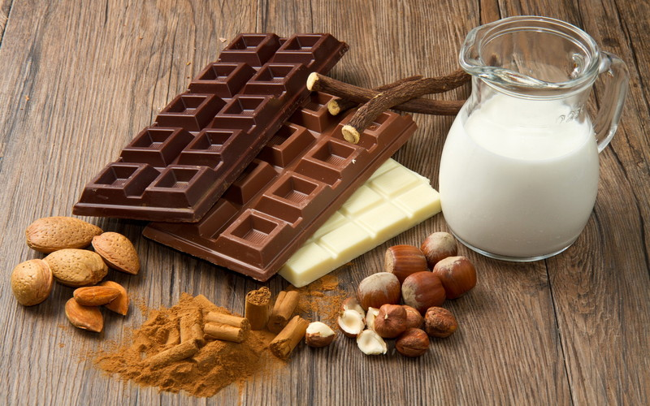

Tu będą jakieś elementy
~ Miranda Ingram
"Czekolada nie tylko nie psuje zdrowia, ale wręcz je poprawia"- tak brzmi oficjalna wiadomość przekazana podczas jednej z plenarnych sesji toczącego się w Waszyngtonie dorocznego kongresu Amerykańskiego Towarzystwa Wspierania Nauki. Prof. Louis Grivetti z Uniwersytetu Kalifornijskiego w Davis sporządził listę około 100 najrozmaitszych dolegliwości, leczonych przez ostatnie kilkaset lat kakao i czekoladą. Na liście tej znalazły się między innymi: zmęczenie, apatia, wyczerpanie nerwowe, kłopoty z trawieniem, anemia, znaczny spadek wagi, słaby apetyt.
Zapobiega ona zakrzepom i zmniejsza ryzyko zawału serca.Zawarte w niej składniki uelastyczniają ścianki naczyń krwionośnych przeciwdziałając m.in. zatorom. Zawarte w ziarnach kakao polifenole poprawiają pracę układu krążenia. Związki te rozkurczają naczynia krwionośne (co ułatwia przepływ krwi), neutralizują działanie tzw. złego cholesterolu i zapobiegają powstawaniu blokujących naczynia skrzepów.
Ciemna czekolada zawiera w sobie antyoksydanty, które chronią przed starzeniem związanymi z wiekiem. Wpływa pozytywnie na pamięć, a najnowsze badania pokazują, że hamuje rozwój demencji i zmniejsza ryzyko choroby Alzheimera. Poza tym czekolada zawiera magnez, który usprawnia przewodnictwo nerwowe, przez co podnosi sprawność intelektualną.
Czekolada może pomóc schudnąć! Spowalnia trawienie i wywołuje uczucie sytości, dzięki czemu później odczuwamy głód i jemy około 15% kalorii mniej. Możliwe jest to dzięki niskiemu indeksowi glikemicznemu (22), dzięki czemu trzustka nie wydziela nadmiernej ilości insuliny, a to nie powoduje uczucia głodu.
Dobry nastrój przede wszystkim, brązowa słodycz ma wiele składników podnoszących poziom serotoniny we krwi, hormonu odpowiedzialnego za dobry humor i szczęście. Badania przeprowadzone przez grupę naukowców z Helsinek wykazały, że czekolada poprawia nastrój przyszłych matek, a tym samym pozytywnie wpływa na rozwój płodu. Według nich dzieci matek, które jadły w ciąży regularnie ciemną czekoladę, są weselsze i bardziej aktywne.
Spośród wszystkich słodyczy jest najmniej niebezpieczna dla zębów. Z ostatnich doniesień wynika, że zawiera substancje zapobiegające próchnicy.